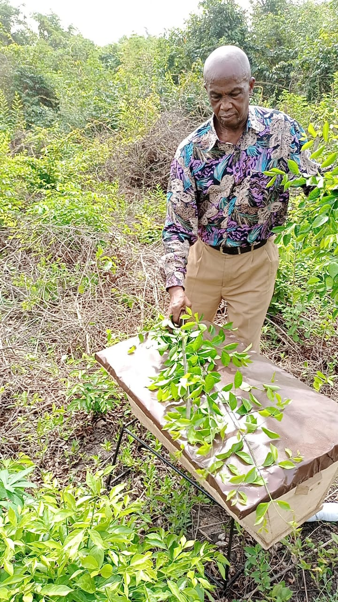
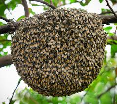
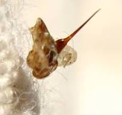
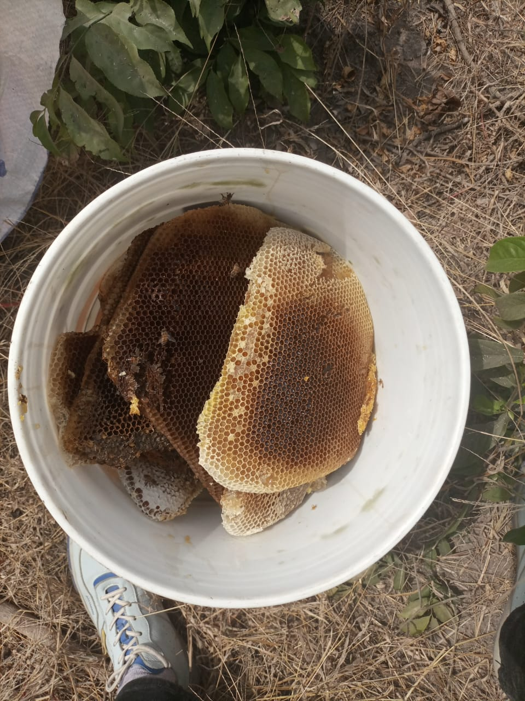
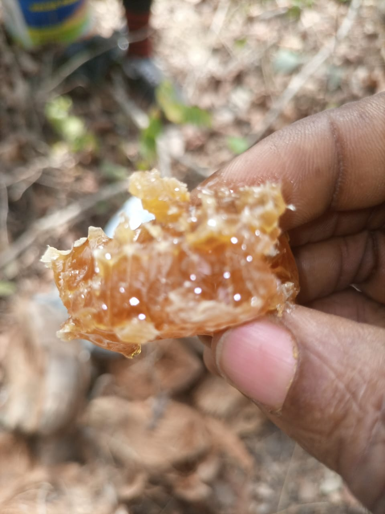
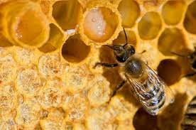
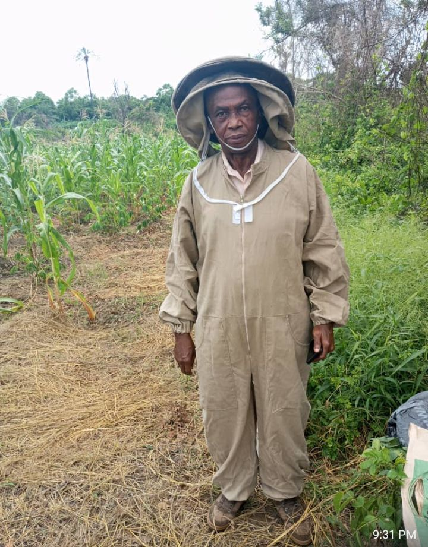
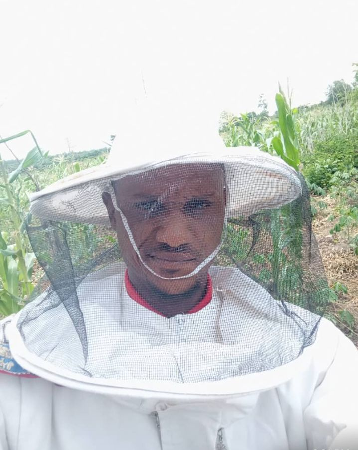

< website
DIVINE TRI‐EAGLES CONCEPT LTD
☎:08063054040

We Do Production And Farming Of Beeswax,Propolis, Royal-jelly And Others For Both local And Export;
Honey honey bee is a sweet and viscous substance made by several species of bees, the best-known of which are honey bees. Honey is made and stored to nourish bee colonies. Bees produce honey by gathering and then refining the sugary secretions of plants (primarily floral nectar( or the secretions of other insects, like the honeydew of aphids. This refinement takes place both within individual bees, through regurgitation and enzymatic activity, and during storage in the hive, through water evaporation that concentrates the honey's sugars until it is thick and viscous.
Honeybee hives Honeybee hives are constructed by worker bees and serve as their home, a place to store honey and pollen, and a breeding ground for new generations. These hives are typically made of wax secreted by the worker bees and arranged into hexagonal cells to form honeycombs. Wild honeybees may choose natural cavities like hollow trees, rock crevices, or caves, while domesticated bees may be housed in human-made structures like wooden boxes with frames for honeycombs
Bees needle A bee sting is the wound and pain caused by the stinger of a female bee puncturing skin. Bee stings differ from insect bites, with the venom of stinging insects having considerable chemical variation. The reaction of a person to a bee sting may vary according to the bee species. While bee stinger venom is slightly acidic and causes only mild pain in most people,allergic reactions may occur in people with allergies to venom components
Beeswax Beeswax is a natural wax produced by honeybees, used for various purposes like building honeycombs, and in cosmetics and food products. It's a complex chemical mixture containing fatty acids, esters, and more. Beeswax can be found in a range of colors, from white to brown, depending on the source and what the bees have gathered. Beeswax is a naturally occurring wax produced in the bee's hives by honeybees JOSEPH. OTOIDE.
Propolis Propolis, also known as bee glue, is a resinous substance collected by honeybees from various plants. Bees use it to seal cracks in the hive and protect it from intruders. Propolis has also been recognized for its potential medicinal properties. with some traditional uses including treating wounds and infections. Propolis is a resin-like material made by bees from the buds of poplar and cone-bearing trees. Bees use it to build hives, and it may contain beehive byproducts. Propolis seems to help fight against bacteria, viruses, and fungi.
Royal-jelly Is a honey bee secretion that is used in the nutrition of larvae and adult queens. It is secreted from the glands in the hypopharynx of nurse bees, and fed to all larvae in the colony, regardless of sex or caste. During the process of creating new queens, the workers construct special queen cells. The larvae in these cells are fed with copious amounts of royal jelly. This type of feeding triggers the development of queen morphology, including the fully developed ovaries needed to lay eggs
BEE VENOM Also know as apitoxin is a colorless and bitter liquid. according to nigeria apitherapy is the therapeutic usages of products made by honeybees such as bee venom and bees. The bee venom treatment uses the venom commencing the bees to treat ailments that do not respond to traditional western medicine, few of the functions of bee venom are curing arthritis, anti-inflamatory , pain relieve. and other claims include acne, psoriasis, and scaring from sking cancer. Almost 10,000 bee stings are required to make one gram of bee venom. This makes venom almost seven times more valueable than gold. "BEEVOM HAS HIV AND CANCER CURE."
BEE VENOM One of the major factor driving the bee venom market is the extensive usage of the medicinal products. For instance, bee venom is used majorly in Europe from several decades especially for the treatment of rheumatic diseases. The live bees, as well as the venom extracts. are used for the treatment in Europe. BEEVENOM is a lucrative products that can be obtained by stimulating the bees to sting. Bee venom is a rich source of pharmaceutically active components.The current minimum price of BEEVENOM in the international market is $30,000 per kg. "BEEVOM HAS HIV AND CANCER CURE."
I'm sorry to hear that you've faced challenges with securing funding from those institutions. CrowdFunding platform can be a great alternative. Here are a few popular option:
↓
↓
↓
1. Kickstarter(focuses on creative project)
2. Indiegogo (gerneral crowding platform)
3. GoFundMe (primarily for personal causes, but also for businesses')
4. Barnaby (focuses on african businesses and projects)
5. Africafunding ( crowdfunding for African entrepreneurs)
Regarding potential partners, consider reaching out to:
↓
↓
↓
1. Impact investors ( e.g., Tony Elumelu Foundation, Africa Impact Investing Alliance)
2. Angel investors and networks (e. g., African Business Angel Network)
3. Venture capital firms focused on Africa (e. g., Helios Investment partner , TLcom Capital)
4. International organizations like the world Bank, AFDB, and UN agencies)
5. Local business associations, chambers of commerce, and industry‐specific groups
To increase your chances of success, make sure to:
↓
↓
↓
1. Develop a compelling pitch and business plan
2. Build a strong online presence (websites, social media)
3. Network and attend relevant events and conferences
4. Engage potential partners and investors through email, phone, or in‐person meetings
Remember, crowdfunding and partner outreach require persistence and creativity. Good luck!
↓
↓
↓
(As for company's contact. We are going to work on that sooner than expected.)